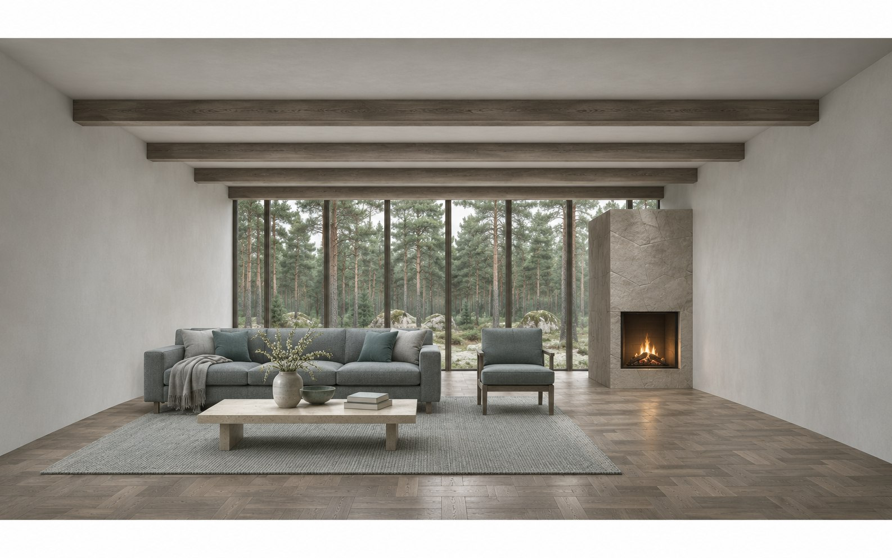
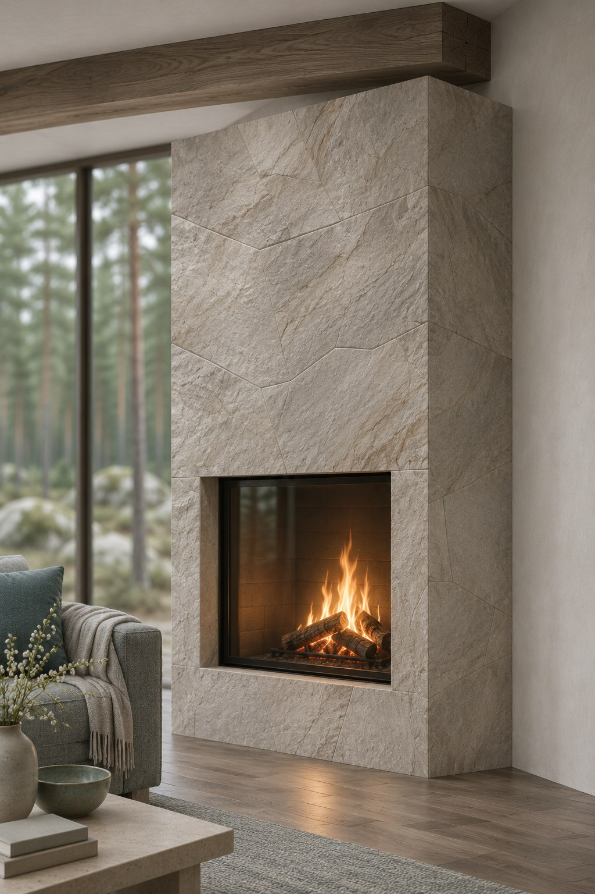
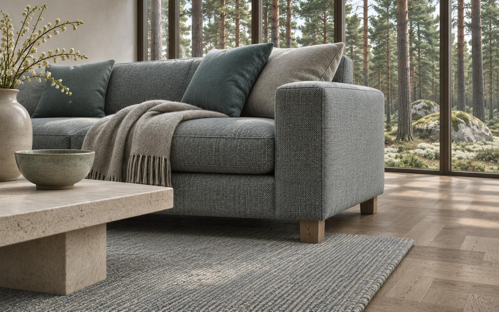

Тихое крыло
Спальня, детская и гостевая связаны галереей. Двери с притвором; стены со звукопоглощающим заполнением по расчёту.
Хозяйственный вход
Постирочная рядом с прихожей. Верхняя одежда и садовый инвентарь не проходят через жилые комнаты.
Общая жизнь — вдоль стекла.
Личные комнаты — в глубине.
Между ними проходит тихая галерея.

Визуализации сгенерированы ИИ для концепта; это не фотографии реализованного объекта.


Вход делит дом на гостевую и личную части. Из кухни видно столовую, но рабочая поверхность скрыта от дивана.
Пример — концепт для портфолио. Площадь 160 м² и размеры условные. План требует обмеров и расчёта конструкций.
Высокая фрамуга над галереей проводит дневной свет в центр. Двери спален смещены относительно гостиной: из зоны общения не видно кроватей.
Шторы на общей направляющей позволяют закрыть всю стеклянную стену без визуального дробления.
Дымчатый шпон связывает скамью, кухню и дверные полотна. Серо-голубой камень собирает каминный блок. Минеральная краска отражает свет.
Скамья, кухня и двери.
КаменьКаминный блок.
КраскаСтены и потолок.
Текстуры схематичны; подбор по физическим образцам.
Спальня, детская и гостевая связаны галереей. Двери с притвором; стены со звукопоглощающим заполнением по расчёту.
Постирочная рядом с прихожей. Верхняя одежда и садовый инвентарь не проходят через жилые комнаты.
Пример — концепт для портфолио. Смета проектирования для 160 м²; строительство, инженерные проекты и комплектация не включены.
| Работа | ₽/м² | Сумма |
|---|---|---|
| Планировка и сценарии | 700 | 112 000 ₽ |
| Концепция и материалы | 900 | 144 000 ₽ |
| Рабочие чертежи | 1 400 | 224 000 ₽ |
| Спецификации | 500 | 80 000 ₽ |
| Дизайн-проект | 3 500 | 560 000 ₽ |
Визуализация — от 30 000 ₽ отдельно. Объём согласовывается после обмеров.